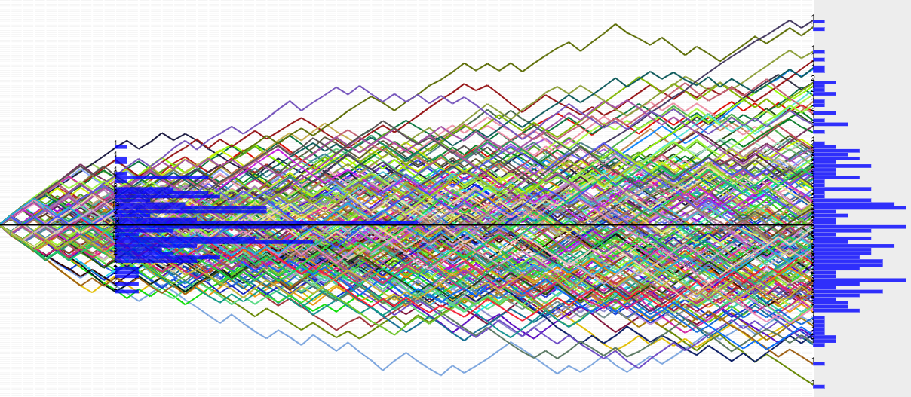

Stochastic Differential Equations (SDE) are differential equations that involve both deterministic and random components. They are used to model the evolution of systems where randomness plays a significant role.
These equations are foundational in finance, helping to model the random movements of financial instruments and understand the associated risks and uncertainties.
Some of the most important are:
Arithmetic Brownian Motion:
The equation for arithmetic Brownian motion is given by:
\[ dX_t = \mu \, dt + \sigma \, dW_t \]
- \(X_t\) represents the value of the process at time \(t\).
- \(\mu\) is the drift term, representing the average rate of return per unit time.
- \(\sigma\) is the volatility, representing the standard deviation of the random fluctuations.
- \(dW_t\) is a Wiener process or Brownian motion, representing random, continuous, and unpredictable movements.

N=70, M=200, P=0.5
Geometric Brownian Motion (Black–Scholes Model):
The equation for geometric Brownian motion is:
\[ dS_t = \mu S_t \, dt + \sigma S_t \, dW_t \]
- \(S_t\) is the stock price at time \(t\).
- \(\mu\) is the average rate of return.
- \(\sigma\) is the volatility.
- \(dW_t\) is a Wiener process. N=70, M=200, P=0.5, sigma=0.5, mu=0.5
Ornstein–Uhlenbeck Process (Mean-Reverting Process):
The equation is:
\[ dX_t = \theta (\mu - X_t) \, dt + \sigma \, dW_t \]
- \(X_t\) is the value of the process at time \(t\).
- \(\theta\) is the speed of mean reversion.
- \(\mu\) is the mean to which the process reverts.
- \(\sigma\) is the volatility.
- \(dW_t\) is a Wiener process. N=70, M=200, P=0.5, sigma=0.3, mu=10, theta=0,3
Vasicek Model:
The equation is:
\[ dX_t = \kappa (\theta - X_t) \, dt + \sigma \, dW_t \]
- \(X_t\) is the value of the process at time \(t\).
- \(\kappa\) is the speed of mean reversion.
- \(\theta\) is the mean.
- \(\sigma\) is the volatility.
- \(dW_t\) is a Wiener process. N=70, M=200, P=0.5, sigma=0.3, theta=3, k=0.1
Hull–White Model:
It extends the Vasicek model by making the mean reversion and volatility parameters time-dependent.
Cox–Ingersoll–Ross (CIR) Model:
The equation is:
\[ dX_t = \kappa (\theta - X_t) \, dt + \sigma \sqrt{X_t} \, dW_t \]
It is similar to the Vasicek model but includes a term proportional to the square root of the process.
Black–Karasinski Model:
The Black–Karasinski model is an extension of the Cox–Ingersoll–Ross (CIR) model. It introduces stochastic volatility, allowing the volatility parameter to vary over time. The equation is given by:
\[ dX_t = (\theta(t) - a X_t) \, dt + \sigma(t) \sqrt{X_t} \, dW_t \]
- \(X_t\) is the short rate at time \(t\).
- \(\theta(t)\) is the mean reversion function.
- \(a\) is the speed of mean reversion.
- \(\sigma(t)\) is the volatility function.
- \(dW_t\) is a Wiener process.
Heston Model:
The Heston model is used to describe the volatility of an asset and is defined by two stochastic differential equations, one for the asset price and one for its volatility.
\[ dS_t = \mu S_t \, dt + \sqrt{V_t} S_t \, dW_t^1 \]
\[ dV_t = \kappa (\theta - V_t) \, dt + \sigma \sqrt{V_t} \, dW_t^2 \]
- \(S_t\) is the asset price at time \(t\).
- \(V_t\) is the instantaneous variance (volatility squared) at time \(t\).
- \(\mu\) is the average rate of return.
- \(\theta\) is the long-term average volatility.
- \(\kappa\) is the speed of mean reversion of volatility.
- \(\sigma\) is the volatility of volatility.
- \(dW_t^1\) and \(dW_t^2\) are two correlated Wiener processes.
Chen Model:
The Chen model is a more complex stochastic volatility model that considers both jumps and continuous-time processes in the volatility equation.
\[ dX_t = (\mu - \lambda X_t) \, dt + \sigma \sqrt{X_t} \, dW_t + dJ_t \]
- \(X_t\) is the volatility of the asset at time \(t\).
- \(\mu\) is the average growth rate.
- \(\lambda\) is the mean-reverting speed.
- \(\sigma\) is the volatility of the process.
- \(dW_t\) is a Wiener process.
- \(dJ_t\) is a jump process.
Bibliography:
Lecture notes from the lesson of the statistics course